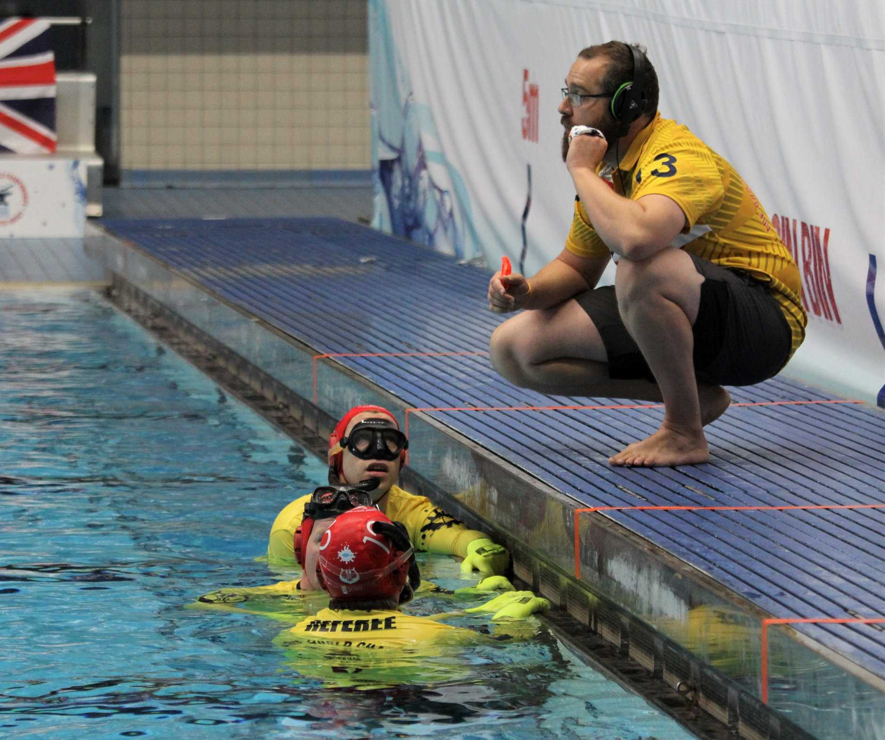

Underwaterhockey
Underwater hockey (UWH), also known as Octopush (mainly in the United Kingdom) is a globally played limited-contact sport in which two teams compete to manoeuvre a puck across the bottom of a swimming pool into the opposing team's goal by propelling it with a hockey stick (or pusher). A key challenge of the game is that players are not able to use breathing devices such as scuba gear whilst playing, they must hold their breath.
Underwater hockey is now played worldwide, with the Confédération Mondiale des Activités Subaquatiques, abbreviated CMAS, as the world governing body. The first Underwater Hockey World Championship was held in Canada in 1980.
Play
Two teams of up to ten players compete, with six players in each team in play at any one time. The remaining four players are continually substituted into play from a substitution area, which may be either on deck or in the water outside the playing area.

Before the start of play the puck is placed in the centre of the pool, and the players wait in the water whilst touching the wall above the goal they are defending. At the start-of-play signal (usually a buzzer or a gong) members of both teams are free to swim anywhere in the play area and try to score by manoeuvring the puck into the opponents' goal using only their stick. Players hold their breath as they dive to the bottom of the pool (a form of dynamic apnoea, as in free-diving).
Play continues until either a goal is scored, when players return to their wall to start a new point, or a break in play is signalled by a referee (whether due to a foul, a time-out, or the end of the period of play). Games consist of two halves of typically ten to fifteen minutes (depending on tournament rules; 20 minutes at World Championship tournaments) and a short half-time interval of usually three minutes. At half time the two teams switch ends.
A typical playing formation is 3-3 (three offensive players or forwards, and three defensive players or backs) of which 3-2-1 (three forwards, two mid-fielders and a back) is a variation. Other options include 2-3-1 (i.e., two forwards, three mid-fielders, and a back), 1-3-2, or 2-2-2. Formations are generally very fluid and are constantly evolving with different national teams being proponents of particular tweaks in formations, such as New Zealand with their 'box' (2-1-2-1) formation. As important to tournament teams' formation strategy is the substitution strategy; substitution errors might result in a foul (too many players in the play area) that can result in a player from the offending team being sent out, or maybe a tactical blunder (with too few defenders in on a play).
Often players who are most successful in this game are strong swimmers, have a great ability to hold and recover their breath, and are able to produce great speed underwater while demonstrating learned skills in puck control. It is also important that they are able to work well with their team members and take full advantage of their individual skills.
Referees
Officiating the game are two (or three) water referees (i.e. in the pool with full snorkelling gear, and wearing a distinctive red cap, orange gloves and golden yellow shirt) to observe and referee play at the pool bottom, and one or more poolside deck referees to track time (both playing times and penalty times for penalised players), maintain the score, and call fouls (such as excessive number of players in play, failure to start a point from the end of the playing area, or another foul capable of being committed at or noticed from the surface). The deck (chief) referee responds to hand signals given by the water referees to start and stop play, including after an interruption such as a foul or time-out, or indeed to stop play if they themself see a rule infringement.
Rules
The Official Rules, which are available for download in PDF form without charge, define (with illustrations) a valid goal, the fouls and signals, the dimensions of the playing area, sticks, and goals, team composition and substitution procedure, and additional rules and arrangements for multi-team tournaments and championships.
There are a number of penalties described in the official underwater hockey rules, ranging from the use of the stick against something (or someone) other than the puck, playing or stopping the puck with something other than the stick, and "blocking" (interposing one's self between a teammate who possesses the puck and an opponent; one is allowed to play the puck but not merely block opponents with one's body).
If the penalty is minor, referees award an advantage puck: the team that committed the foul is pushed back 3 metres (9.8 ft) from the puck, while the other team gets free possession. For major penalties such as a dangerous pass (e.g. striking an opponent's head) or intentional or repeated fouls, the referees may eject players for a specified period of time or for the remainder of the game, or even - in the case of very serious or deliberate fouls - for the remainder of a tournament. A defender committing a serious foul sufficiently close to his own goal may be penalised by the award of a penalty shot or even a penalty goal awarded to the fouled player's team.